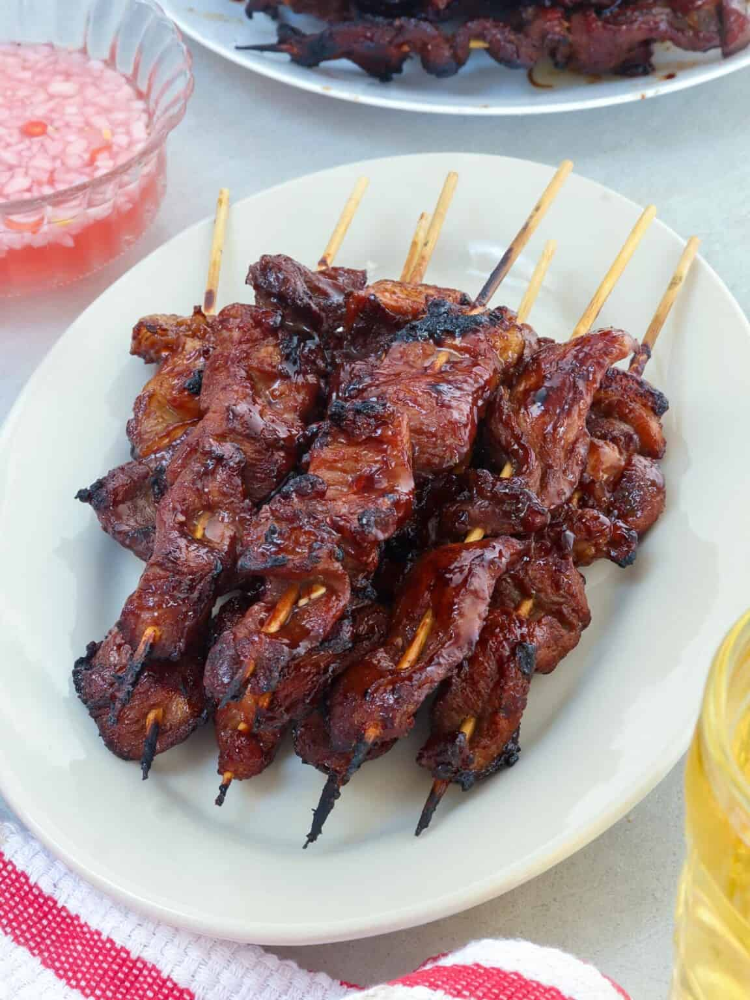

Filipino barbecue typically involves small pieces of pork, chicken, or beef threaded onto bamboo skewers. The meat is marinated in a mixture that usually includes soy sauce, calamansi (or lemon) juice, garlic, brown sugar, vinegar, and sometimes banana ketchup, which gives it a sweet and tangy flavor profile. Some variations may include honey, paprika, or other spices for added aroma and taste. After marinating for several hours to absorb the flavors, the skewered meat is grilled over charcoal or an open flame, brushing it occasionally with the marinade to create a glaze. The charred edges and smoky aroma are key features that make it distinctive. Filipino barbecue is often served with rice, dipping sauces like vinegar with chili, or sweet-spicy sauces, and it is a popular street food as well as a common dish for parties and celebrations. This dish is especially celebrated during Filipino gatherings because of its bright, balanced flavors, tender texture, and accessibility.